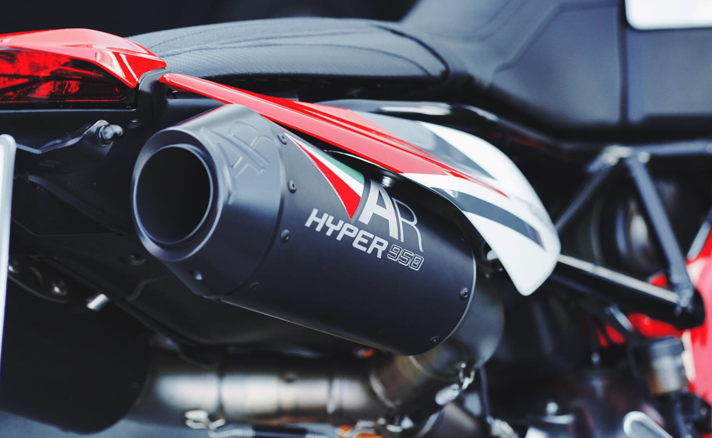
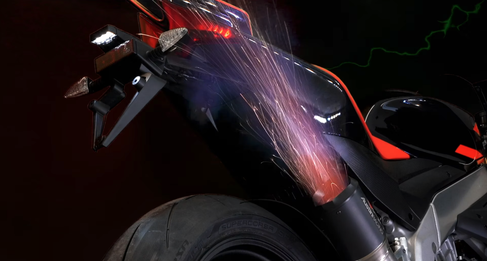
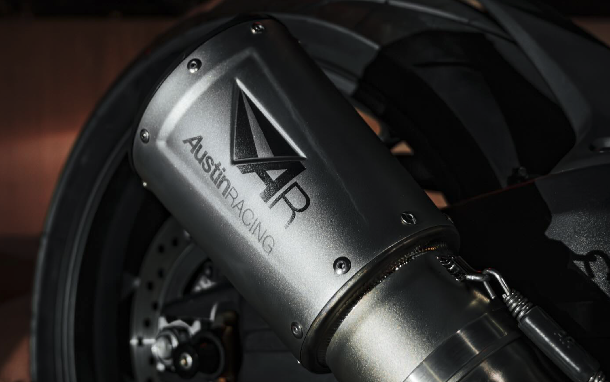
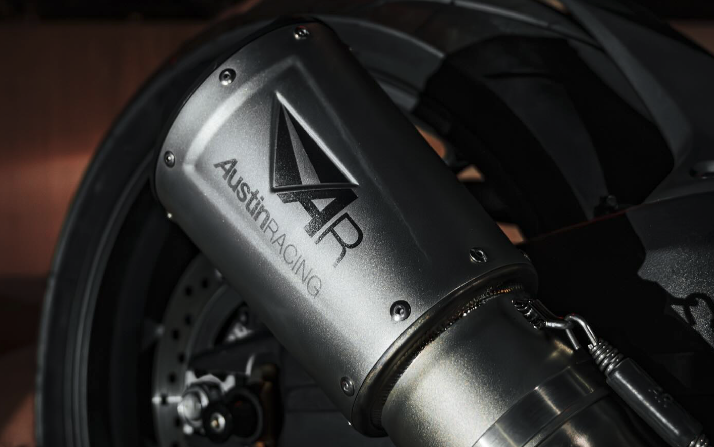
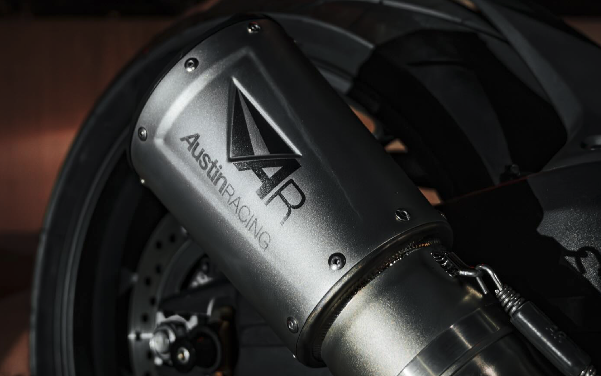

AUSTIN
RACING
Disclaimer
This Information Memorandum ("Memorandum") is provided solely for use by recipients ("Recipients") in considering their interest in acquiring shares in this company.
This information contained in this Memorandum is selective and is subject to updating, expansion, revision, and amendment. It does not purport to contain all the information that Recipients may require. No obligation is accepted to provide Recipients with access to any additional information or to update, expand, revise, or amend the information, or to correct any inaccuracies which may become apparent. Recipients should conduct their own investigation and analysis of the Company and of the information contained in this Memorandum and are advised to seek their own professional advice on the legal, financial, taxation and other consequences of acquiring shares in the Company.
This Memorandum includes certain statements, estimates and projections with respect to the anticipated future performance of the Company and as to the market for the Company's products. Such statements, estimates and projections reflect various assumptions made by the Shareholders and by the management of the Company concerning anticipated results, which assumptions may or may not prove to be correct. No representation is made as to the accuracy of such statements, estimates and projections.
This Memorandum is confidential being for use only by the persons to whom it is issued and who have signed the required form of confidentiality agreement. This Memorandum may not be copied or distributed by the recipient to third parties (other than in confidence to the recipient's professional advisers for the purpose of giving the recipient advice). In the event that the recipient does not continue with his interest in the Company, this Memorandum must be returned to the Company.
In no circumstances may Recipients or their officers, employees, agents and professional advisers make contact with the management, employees, customers, agents or suppliers of the Company until permission to do so is given in writing by Business Partnership or the Shareholders
The Company
Austin Racing stands at the forefront of the motorcycle industry, renowned for its high-performance exhaust systems and cutting-edge engineering solutions. With a rich heritage of over a decade in delivering top-tier products, Austin Racing is celebrated for its commitment to quality and innovation. The company's dedication to excellence is evident in its consistently high performance and the endorsement of top racing teams worldwide.
Located in the heart of the UK, Austin Racing operates from a state-of-the-art facility, where precision engineering meets unparalleled craftsmanship. The company's exhaust systems are designed not only to enhance the performance of motorcycles but also to offer a distinctive aesthetic that sets bikes apart. Each product is meticulously engineered to deliver optimal power, efficiency, and a thrilling riding experience.
Austin Racing's team of expert engineers and technicians embodies a passion for motorsport and an unwavering commitment to quality. With a focus on precision, the skilled workforce ensures that every exhaust system meets the highest standards of performance and durability. Customers enjoy peace of mind knowing they are investing in products backed by rigorous testing and a track record of success in competitive racing.
Understanding the diverse needs of motorcyclists, Austin Racing offers a range of products tailored to various riding styles and preferences. From track-ready systems to street-legal options, each product is crafted to provide exceptional performance and reliability. Austin Racing is more than just a brand; it is a community of enthusiasts and professionals dedicated to pushing the boundaries of motorcycle engineering.
At Austin Racing, every rider is valued, and every product is designed with the utmost attention to detail. Experience the thrill of innovation and performance with Austin Racing, where engineering excellence and passion for motorcycles converge.
The Opportunity
Austin Racing presents a unique and compelling opportunity for acquisition, distinguished by its industry-leading performance, innovative engineering, and strong market presence. With a track record of excellence in motorcycle exhaust systems, Austin Racing offers significant potential for growth and investment in the high-performance automotive sector.
Established Reputation
Austin Racing has established itself as a premier brand in the motorcycle industry, renowned for its high-performance exhaust systems and advanced engineering solutions. The company's reputation is built on a decade of delivering superior products that enhance both the power and aesthetics of motorcycles. Endorsements from top racing teams and a strong presence in competitive motorsport further underscore Austin Racing's esteemed position in the market, providing a robust foundation for future expansion.
Innovative Engineering
The company's state-of-the-art facilities are dedicated to cutting-edge research and development, resulting in exhaust systems that lead the industry in performance and design. Austin Racing's commitment to innovation ensures that each product is crafted with precision and incorporates the latest technological advancements, offering unparalleled performance and durability.
Skilled Team
Austin Racing benefits from a team of highly skilled engineers and technicians who are passionate about motorsport and dedicated to achieving excellence. This talented workforce is instrumental in the company's success, driving continuous improvement and maintaining the high standards that define Austin Racing's products. Their expertise and commitment are key to sustaining the company's competitive edge and fostering a positive business environment.
Growth Potential
With a strong brand presence and a portfolio of high-quality products, Austin Racing is well-positioned for continued growth and market expansion. The company's focus on performance, innovation, and customer satisfaction presents a compelling investment opportunity for stakeholders seeking to capitalise on the booming motorcycle and motorsport industries (more about the potential below).
Product Overview
Austin Racing offers Full Exhaust Systems designed for high performance. These systems are crafted to enhance motorcycle power, reduce weight, and improve overall riding experience. They feature advanced materials and engineering to deliver superior sound and performance.
Aftermarket Exhausts that attach directly to the existing exhaust system. Slip-ons provide a significant boost in performance and sound without the need for a complete system overhaul. They are designed to be compatible with a wide range of motorcycle models.
Performance Parts & Accessories
- Tuning Devices
- Parts & Accessories
Custom Solutions
The team is always happy to offer options tailored to a specific need and have the experience to talk this through with the customer.
Merchandise, Decals & Apparel
Austin Racing offers a selection of branded merchandise, including apparel and accessories. This merchandise allows enthusiasts to showcase their support for the brand.


 


Potential for Growth
The European Motorcycles Market is booming. The economy trend influence over the 2-wheeler market is clear looking at the YtD May 2024 sales (within 38 countries, from Portugal to Russia), with total figures at 1.21 million (+19.1%) projecting the best results in the last 25 years.
The global motorcycle market size was valued at $105.52 billion in 2021 and is projected to reach $233.5 billion by2031, according to Allied Market Research. The number of on-road motorcycles registered in the U.S. has more than doubled from 4.3 million in 2002 to 8.8 million in 2024.
Established Market Presence
With a track record of supplying around 5,000 exhausts per year, Austin Racing has a strong foothold in the market. The company's reputation for quality and innovation positions it well to leverage the growing demand for high-performance motorcycle components.
Opportunities for Expansion
Given the projected market growth, there is substantial potential for Austin Racing to expand its production capacity, enhance its product offerings, and enter new geographical markets. The company's focus on performance and bespoke solutions aligns well with the increasing demand for customisation and high-performance parts.
Strategic Partnerships
Collaborations with motorcycle manufacturers and racing teams could further boost Austin Racing's market presence and growth. Strategic partnerships could open up new avenues for product development and distribution.